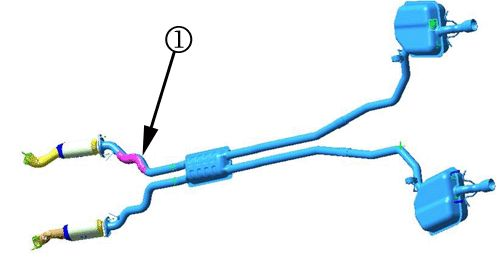
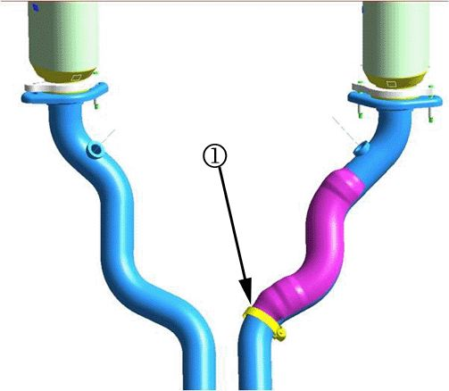
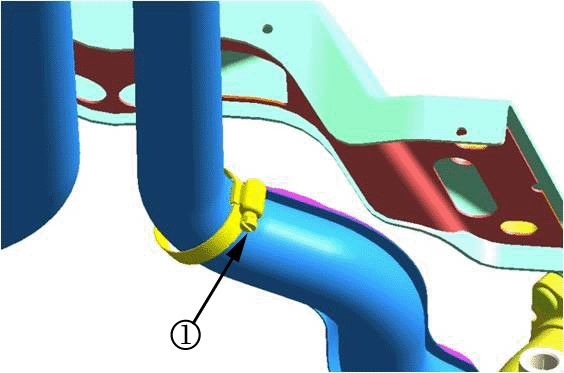
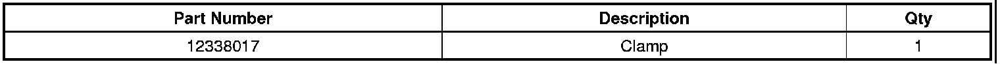

Exhaust - Rattle Noise From Center Of Vehicle At Idle
TECHNICALBulletin No.: 09-06-05-003
Date: April 29, 2009
Subject: Exhaust Rattle Noise from Center of Vehicle at Idle and Partial Throttle (Repair Exhaust Heat Shield with Clamp)
Models:
2008-2009 Cadillac SRX, STS
Condition
Some customers may comment on a metallic sounding rattle heard from the mid-section of the vehicle. The rattle can occur during both hot or cold exhaust system conditions and at engine idle and/or partial throttle.
Cause
This condition may be caused by a cracked exhaust heat shield on the right front inlet pipe of the muffler assembly. The heat shield is typically cracked at the rear weld to the pipe, which allows a rattle between the shield and the pipe.
Correction
Important
DO NOT replace the exhaust system or muffler for this concern.

1. Locate the exhaust heat shield on the right front inlet pipe (1). Verify that the heat shield rear weld to the pipe is cracked and loose from the pipe.

Important
Use the clamp specified in the Parts Information below. DO NOT substitute with another clamp.
2. Attach the clamp to reattach the loose end of the shield to the pipe (1). Be sure to locate and orient the clamp over the shield to ensure the clamp captures the rear part of the shield.

3. Orient the clamp so that the bolt is on the outboard side of the pipe (1). The bolt and clamp shoulder should be located as shown.
Tighten
Tighten the clamp bolt to 2.5 Nm (22 lb in).
Parts Information

Warranty Information
For vehicles repaired under warranty, use the table above.

Disclaimer